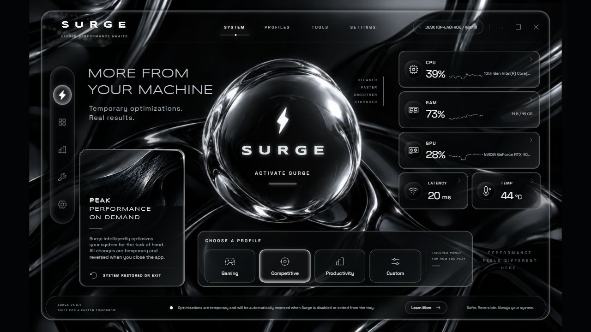
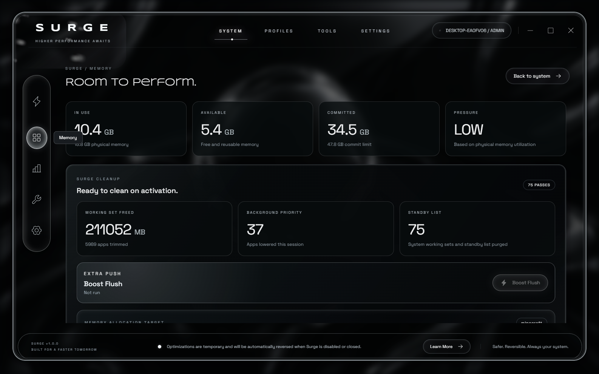
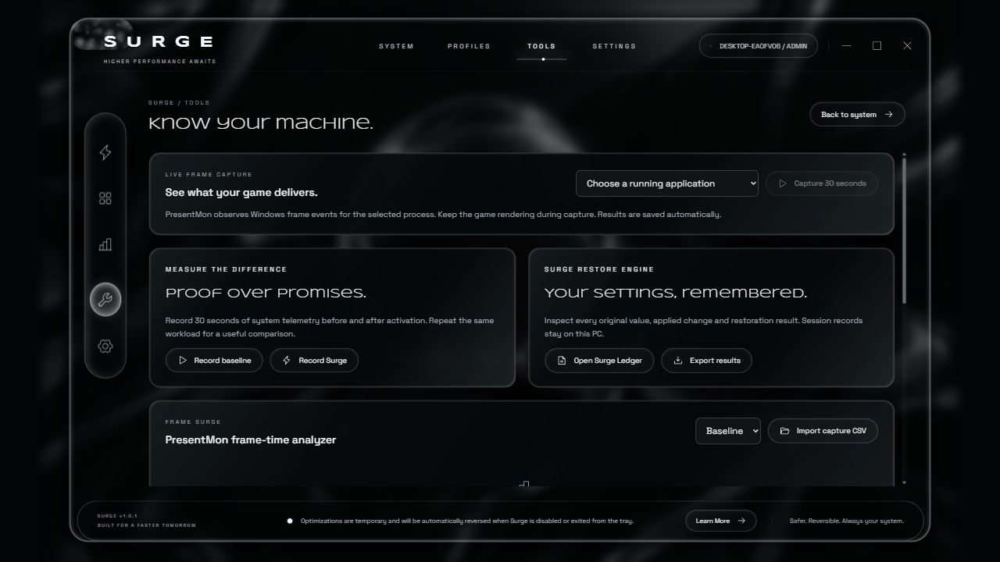
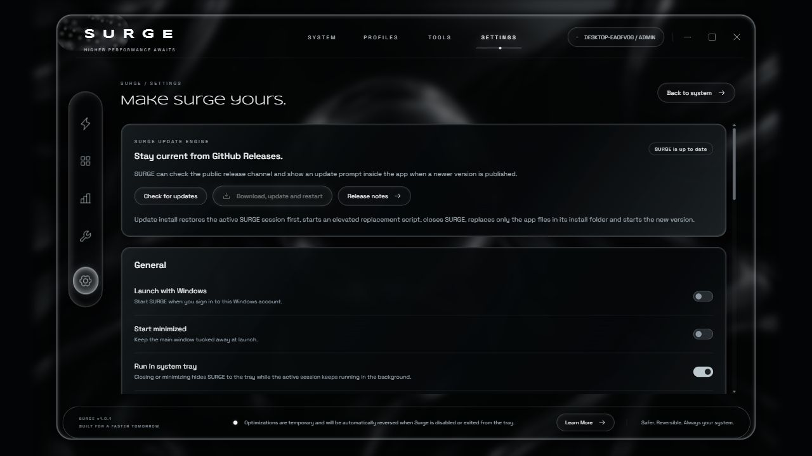

Memory pressure control
Trim safe background working sets, clear reclaimable pressure and use Boost Flush for a manual standby-list cleanup push.
Windows performance control
SURGE gives your PC a cleaner session for games, streams, editing and heavy work. It trims safe background working sets, purges standby memory when elevated, refreshes network state, records every reversible change, stays available from the system tray and gives you an extra Boost Flush when you want another push.

Trim safe background working sets, clear reclaimable pressure and use Boost Flush for a manual standby-list cleanup push.
Choose a running process or browse to an executable, analyze it, save it and focus the session around the workload you care about.
Flush DNS and apply supported Windows TCP tuning when elevated, while reporting real adapter speed, traffic, latency and jitter.
Record baseline and SURGE sessions, import PresentMon captures and export session data for honest before-and-after review.
Real app screenshots



What happens under the glass
SURGE samples CPU, memory, GPU, network adapters, processes and latency from the local machine. The interface is served from a local-only engine on the PC, and the packaged desktop app uses Windows administrator access for the modules that require elevation. v1.0.1 adds tray operation, in-app update checks, optional notifications and an app-only uninstaller.
When activated, the selected profile can switch to an existing high-performance power plan, trim safe background app working sets, reduce safe background priority, flush DNS, apply supported TCP settings, purge standby/system working sets and start Windows volume optimization.
The Surge Ledger records what changed and what gets restored. It does not fake FPS, spoof RAM, bypass security software or promise that hardware, router or ISP limits disappear. It reduces avoidable local pressure and shows what it did.
Current package
Download the release ZIP, verify the checksum if desired, unzip it and run Surge.exe. Administrator launch is recommended for the full cleanup engine.